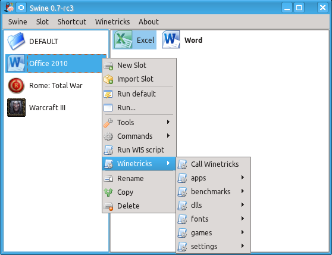

Swine overview
Swine is a graphical wine frontend, that makes it easy to install and run Windows software on Linux systems. Swine uses a modern QT4 interface to offer most of the wine command-line tools to users.
Swine concepts
Swine manages different Windows installations using the Wine-Prefix method. Different software can be installed in separate slots which makes the maintenance much easier. Different slots can emulate different Windows versions and have different libraries installed. This is especially handy for software that needs a highly customized environment (e.g. games).
For each slot, Swine manages a list of shortcuts to Windows programs. Users can create shortcuts for commonly used programs including a working directory and arguments.
Information about wine
Wine is a software environment for Linux that enables the execution of Windows software. Wine uses public specifications and reverse engineering to provide a compatible version of the Windows API without using any code from Microsoft, i.e. wine users do not need a Windows license. Wines compatibility is constantly being improved and wine is already able to run lots of Windows software. The Wine AppDB contains an extensive list of applications together with hints on how to run them.
Winetricks
Winetricks offers automated installation routines for a wide range of applications and libraries. Swine has an integrated support for winetricks.
 Donations accepted:
Donations accepted: